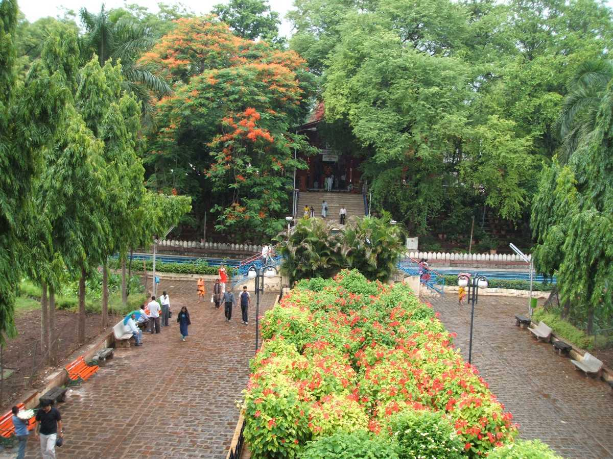

Pune
Maharashtra
About the city Places to visit Best time to visit About food Places to stay Transportation facility Map
About the city
Also called as the 'IT hub OF India'.The thriving metropolis, Pune stores many tourist places that often entice the visitors. With a splash of old world charm, Pune has a number of places of historical importance; and is also lined with other modern attractions like gardens and temples. It is one of those cities that must be visited during Maharashtra tours as it perfectly reflects the state’s diversity.
Places to visit
Shaniwaar Wada
.jpg)
Shaniwar Wada is a historical fortification in the city of Pune, India. Built in 1732, it was the great seat of the Peshwas of the Maratha Empire until 1818. Following the rise of the Maratha Empire, the palace became the center of Indian politics in the 18th century.
Rajiv Gandhi Zoological park

Commonly known as the Katraj Snake Park, Rajiv Gandhi Zoological Park is prominent zoo cum snake park in Pune. Spread over 130 acres, it is divided into three parts - an animal orphanage, a snake park, and a zoo; also there's a lake. In the snake park, one can see over 22 species of snakes and 10 other species of reptiles comprising over 150 individuals, including a King Cobra. In this section of the park, one can visit the library too that tells about all the vital information related to snakes. So as to engage more tourism, the park keeps on organizing festivals and snake awareness programs. The zoo in the complex features animals like leopard, sloth bears, sambars, barking deer, black bucks, monkeys, and elephants.
The Dagadusheth Halwai Ganapati Mandir

The temple is a Hindu Temple located in Pune and is dedicated to the Hindu god Ganesh. The temple is visited by over hundred thousand pilgrims every year.Devotees of the temple include celebrities and chief ministers of Maharashtra who visit during the annual ten-day Ganeshotsav festival.The main Ganesh idol is insured for sum of ₹10 million (US$130,000).The Temple is 130 years old. It celebrated 125 years of its Ganapati in 2017.The temple is a beautiful construction and boasts a rich history of over 100 years. Jay and Vijay, the two sentinels made of marble catch the eye of all at the outset. The construction is so simple that all the proceedings in the temple along with the beautiful Ganesh idol can be seen even from outside.
Aga Khan Palace

The mighty edifice of Aga Khan Palace is situated in Pune and was built by Sultan Muhammed Shah Aga Khan III in the year 1892. It is one of the most important landmarks in Indian history and has been instrumental in many defining moments of India's independence. It was once the site where Mahatma Gandhi, his wife Kasturba Gandhi, as well as Sarojini Naidu and Mahadev Desai were held prisoners. Aga Khan Palace is well known both for its architectural excellence as well as its historical significance. Spread over a vast land of 19 acres, the palace is now the headquarters of the Gandhi National Memorial society. Here, making khadi is still one of the prime activities.
Sarasbaug

Saras Baug is a spectacular garden that is spread over 25 acres of land in the beautiful city of Pune, Maharashtra. Described by many as a heaven for nature lovers, the garden is a popular attraction for both locals and tourists alike. The area where Saras Baug stands today was once a small lake, which dried up and was converted into the picturesque garden that it is today. Saras Baug’s main attraction is the Talyatla Ganpati Temple, built by the Peshwas in the middle of the lake in the year 1750. In addition to the temple, the beautifully manicured lawns with lush green plantations and gorgeous flowers make this place a great picnic spot for families.
Best time to Visit
Well, the months of October to February is the ideal time to visit Pune as the climate is pleasant with cool and humid atmosphere and makes it perfect for sightseeing. The temperature in Pune in October nestles at a range of 20 degree and 27 degree whereas it drops to a minimum of 12 degree in the month of November.
About Food
Pune city is famous for its weather, hills, IT parks, and reputed educational institutions. Pune is also known for its food. There are lip-smacking delicacies to eat in Pune, you need to look out for. Misal Pav Vada-Pav Mango Mastani Bhakarwadi Maharashtrian Thali Pithla Bhakri Sabudana Vada
Places to stay
There are many accomodation options in Pune including the famous ones as follows: 1.Novotel Pune Vimaan Nagar 2.The Orchid Hotel Hinjewadi 3.ibis Pune Vimaan Nagar 4.Hyatt Pune 5.AR Suites Jewels Royal 6.Radisson Blu Hotel Kharadi
Transportation Facility

By Air
Pune Airport,is an airport located approximately 10 km northeast of the historic centre of Pune in the state of Maharashtra, India.

By Rail
Pune Railway Junction (station code: Pune) is the main railway junction of the city of Pune, India. It has two accesses, from HH Aga Khan Road on the south and Raja Bahadur Mills Road from the north.

By Road
The road network consists of Express Highways, National Highways, State Highways and Major District Roads. And it connects all over india.